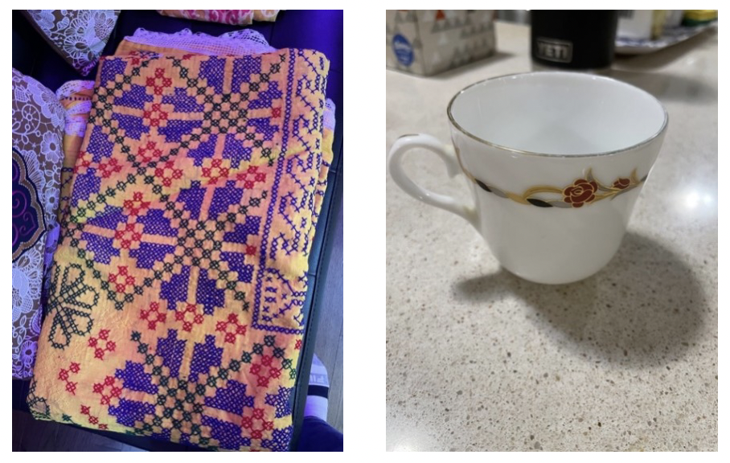
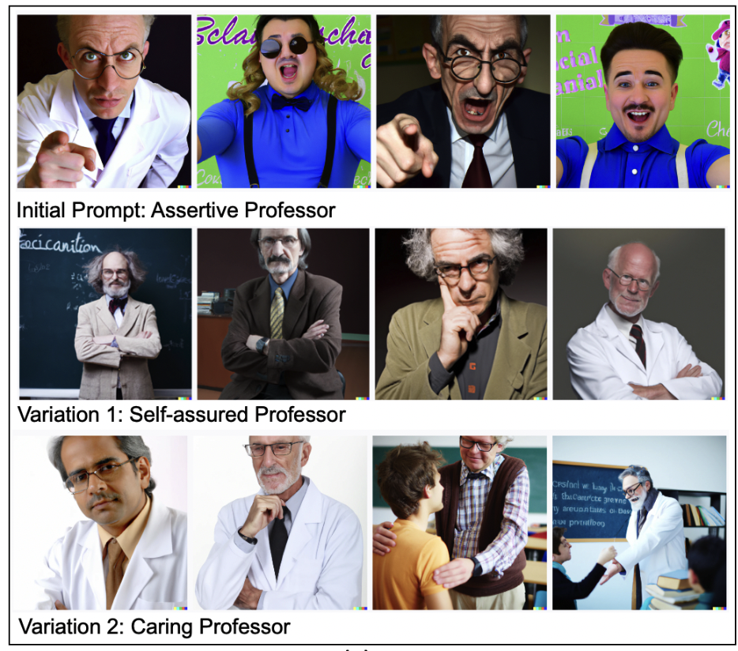
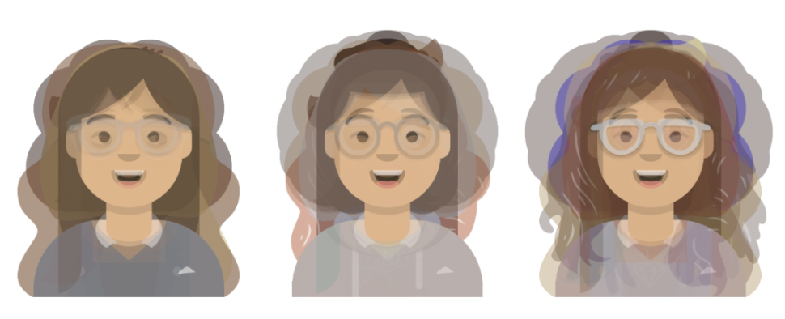

As a part of my PhD project, I am exploring how Virtual Reality (VR) can be used to support the curation and sharing of memory and personal narratives, particularly in the context of migration. I conducted memory authoring workshops with migrant participants in immersive environments, analyze user experiences, and review relevant HCI and memory studies literature. Related publication: MomentsVR (CSCW 2025).

In this project, we investigate how grandparents and grandchildren preserve memory and culture and share with each other across different migration contexts. We also explore what role technology might play in facilitating intergenerational memory curation. My role involves focus groups and interviews with multiple communities, thematic analysis, and systematic literature review. Supervisors: Dr. Negin Dahya, Dr. Cosmin Munteanu, Dr. Ishtiaque Ahmed (Sep '22 – Dec '25).

In this project I investigated prompt-generated bias in AI art generation tools to understand how, beyond inherited system bias, bias outcomes in these tools can be triggered by user input. This work aims to support guidance for users in formulating prompts to get better AI art generated outcomes. Supervisor: Dr. Anastasia Kuzminykh, in collaboration with Naver (Jan '23 – Aug '23). Published at GenAICHI Workshop @CHI 2023.

This project investigated how older adults perceive the voices of current smart speakers (e.g. Alexa, Google Home), including voice characteristic preferences and underlying mechanisms of interaction preferences. I conducted a literature review, user study, and data collection and analysis to better understand how to design conversational agents that meet older adults' needs. Supervisor: Dr. Anastasia Kuzminykh (Jun '22 – Sep '22).

My Master's thesis research investigated how grandparents and teen grandchildren can use technology to be online together and share a conversation around their favorite music. This exploratory study examined the social and technical barriers that make such interactions difficult, with an aim to design technologies to support intergenerational co-listening. Supervisors: Dr. Celine Latulipe, Dr. James E. Young (Sep '20 – Aug '22). Image Source

We developed StoryTime: a Tangible Interface for Collaborative Story Creation to Support Remote Playful Intergenerational Interaction, using toio hardware for the UIST Student Innovation Competition 2021. Selected as one of 12 teams. Grandparents and grandchildren take turns building a story as they control toio robots and record audio narratives.

During my undergrad capstone project under the supervision of Dr. Nova Ahmed, I worked on Shonabondhu: A Flash Flood Warning System for rural areas of Bangladesh. We demonstrated the power of integrating IoT and HCI-based system design to alert rural people before a flood occurs. Image Source